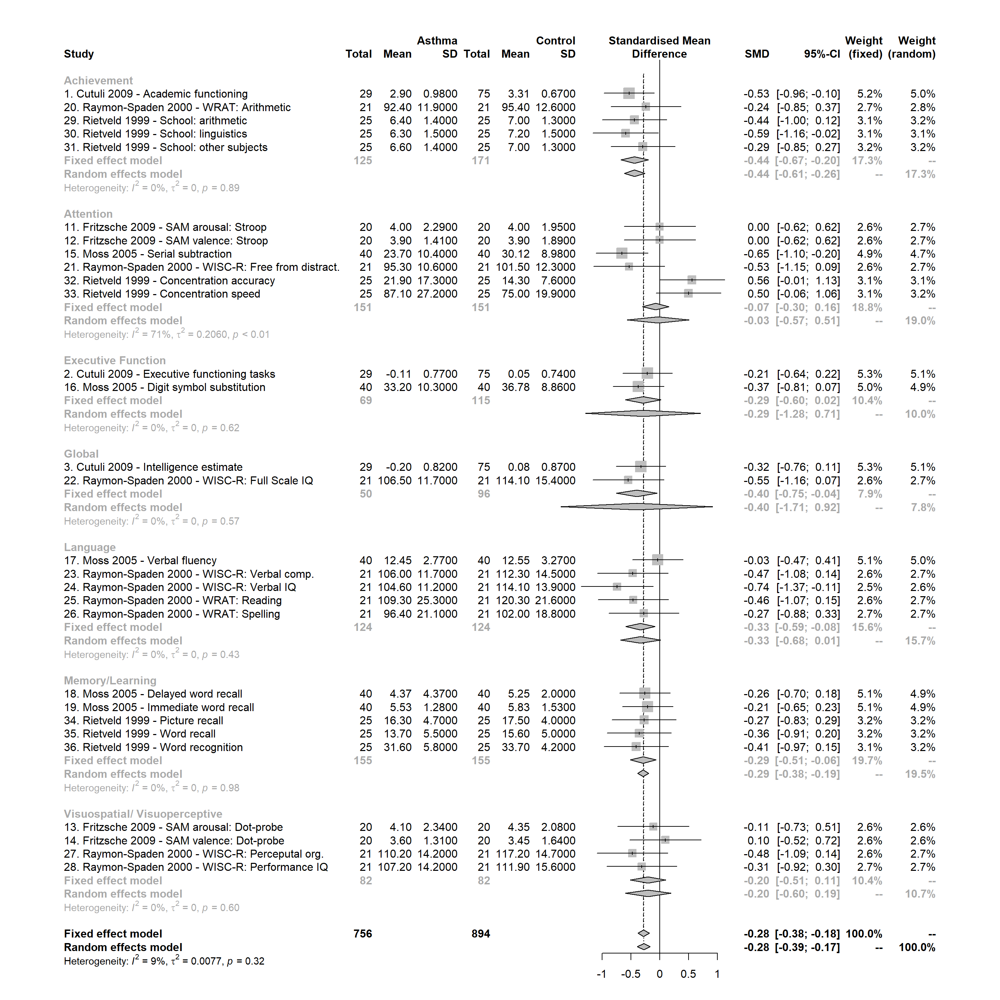
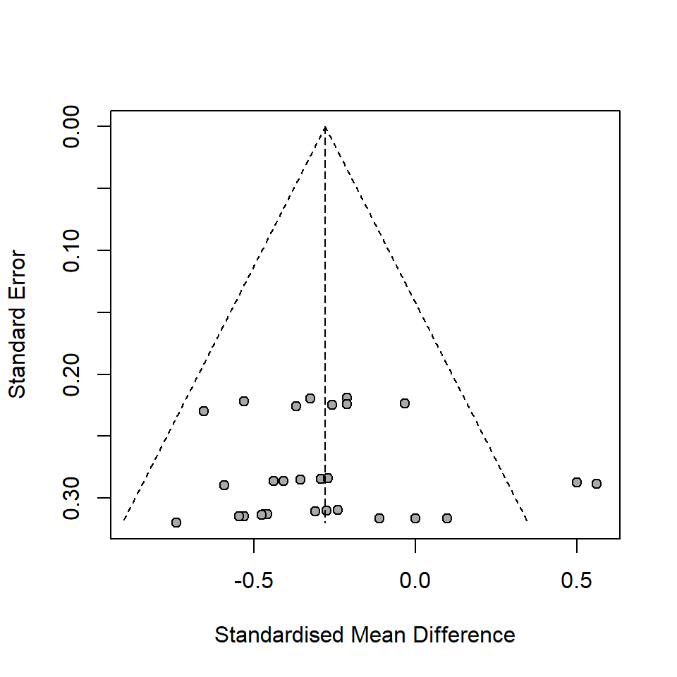
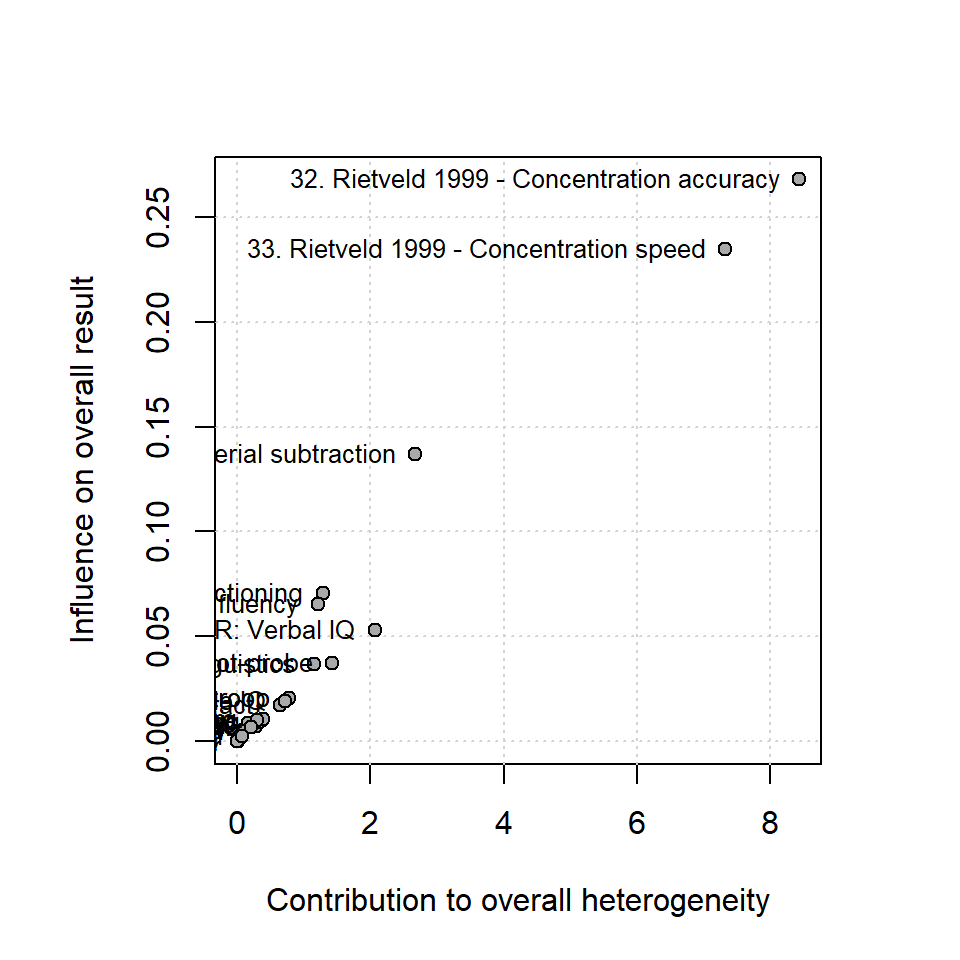
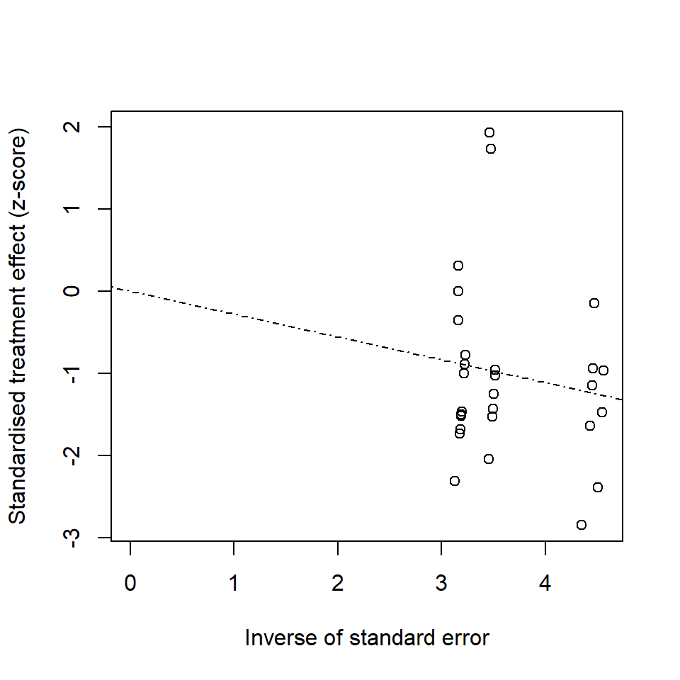

A description of a meta-analysis on cogntive deficits associated with asthma across several neuropsychological domains. Explanation of summary and measure metrics provided with visualizations. Utilizes the meta package.
While I was an undergraduate at West Chester University I worked with my research advisor, Dr. Farzin Irani as a charter member of her (Neuropsychology Research Group). Our first big project was a meta-analysis of cognitive deficits associated with asthma and chronic obstructive pulmonary disease (COPD). This work eventually cumulative in the publication of our article Is asthma associated with cognitive impariments? A meta-analytic reviewalong with Drs. Janet Beausoleil and Lynn Gerald, experts from the Children’s Hospital of Philadelphia’s (CHOP) Division of Allergy and Immunology and College of Publich Health at the University of Arizona, respectively. We completed this analysis on the software program Comprehensive Meta Analysis. This was before I began using R and only knew a few tricks in MS Excel. Needless to say, running a meta-analysis in R is a f^#%-ton easier.
Our publication goes into further detail and utilizes a complete data set, but for simplicity let’s limit ourselves. I’ll also be skipping over our initial literature search and methodlogy and go straight into the fun analytics.
First we have to load in some packages. I may begin every script with library(tidyverse) because of how dependet I’ve become on using piping and other simple tools provided. Thje meta package will hold our main analyses and functions for generating plots. I’ve already pulled in the data and saved it as the dat object.
library(meta)
library(tidyverse)A discription of our analysis.
Our analysis will be called through the metacont() function created specifically for calculating effect estimates with continous data from control and experimental groups. Like many instances, our metrics may actually be interval data but we’re going to assume a more continuous relationship so we can use this anslysis. Psychology as a field is pretty complaint with these violations so nobody should be barking as us to stop immediately.
Here are some arguments for which I’ll provide a little more explanation:
sm = "SMD"
Here we will be using the standard mean differences for our summary measure to pool our studies. Our other options are mean difference (MD) or ratio of means (ROM). If all of these studies used the same instruments/scales to measure each cognitive domain, we would be able to use mean difference; but this is not the case. Rater than using the formula \(D = \bar{X}_1 - \bar{X}_2\) we need to implement a different formula: \[d =\frac{\bar{X}_1 - \bar{X}_2}{S_{within}}\] \[S_{within} = \sqrt{\frac{(n_1 - 1)S^2_1 + (n_2 - 1)S^2_2}{n_1 + n_2 - 2}}\]
method = "Hedges"
This will be a method for determining our effect size. Here we use Hedge’s g rather than Cohen’s d because it provides a more accurate measure when variances are pooled.
ma <- metacont(
studlab = study_id,
n.e = Asthma.Sample.size,
n.c = Control.Sample.size,
mean.e = Asthma.Mean,
mean.c = Control.Mean,
sd.e = Asthma.Std.Dev,
sd.c = Control.Std.Dev,
data = dat,
subset = NULL,
exclude = NULL,
sm = "SMD",
method.smd = "Hedges",
exact.smd = T,
level = .95,
level.comb = .95,
comb.fixed = T,
comb.random = T,
hakn = T,
method.tau = "DL",
tau.preset = NULL,
TE.tau = NULL,
tau.common = F,
prediction = F,
level.predict = .95,
method.bias = "linreg",
backtransf = T,
title = "",
complab = "",
outclab = "",
label.e = "Asthma",
label.c = "Control",
label.left = "",
label.right = "",
byvar = dat$Subgroup.within.study,
bylab = "",
print.byvar = T,
byseparator = "",
keepdata = T,
warn = T)Now that we’ve written out model, all that is left to do is to find some summary metrics and make some plots.
The model is created to utlize some easy wrappers such as summary() and some meta specific plotting such as forest() and funnel() which are very important for understanding your analysis. The summary() function specifically removes our table of SMDs, 95% CIs, and study weights. These we can look at as a forest plot for simplicity,
summary(ma)Number of studies combined: k = 29
SMD 95%-CI z|t p-value
Fixed effect model -0.2786 [-0.3780; -0.1793] -5.50 < 0.0001
Random effects model -0.2779 [-0.3876; -0.1682] -5.19 < 0.0001
Quantifying heterogeneity:
tau^2 = 0.0077; H = 1.05 [1.00; 1.30]; I^2 = 9.3% [0.0%; 41.2%]
Test of heterogeneity:
Q d.f. p-value
30.87 28 0.3228
Results for subgroups (fixed effect model):
k SMD 95%-CI Q tau^2
Achievement 5 -0.4352 [-0.6743; -0.1961] 1.12 0
Attention 6 -0.0683 [-0.2975; 0.1610] 17.38 0.2060
Executive Function 2 -0.2884 [-0.5965; 0.0197] 0.25 0
Global 2 -0.3968 [-0.7502; -0.0435] 0.33 0
Language 5 -0.3334 [-0.5852; -0.0815] 3.79 0
Memory/Learning 5 -0.2870 [-0.5109; -0.0631] 0.38 0
Visuospatial/ Visuoperceptive 4 -0.2014 [-0.5093; 0.1066] 1.87 0
I^2
Achievement 0.0%
Attention 71.2%
Executive Function 0.0%
Global 0.0%
Language 0.0%
Memory/Learning 0.0%
Visuospatial/ Visuoperceptive 0.0%
Test for subgroup differences (fixed effect model):
Q d.f. p-value
Between groups 5.75 6 0.4522
Within groups 25.12 22 0.2913
Results for subgroups (random effects model):
k SMD 95%-CI Q tau^2
Achievement 5 -0.4352 [-0.6146; -0.2558] 1.12 0
Attention 6 -0.0291 [-0.5668; 0.5085] 17.38 0.2060
Executive Function 2 -0.2884 [-1.2843; 0.7075] 0.25 0
Global 2 -0.3968 [-1.7136; 0.9199] 0.33 0
Language 5 -0.3334 [-0.6809; 0.0142] 3.79 0
Memory/Learning 5 -0.2870 [-0.3842; -0.1898] 0.38 0
Visuospatial/ Visuoperceptive 4 -0.2014 [-0.5958; 0.1931] 1.87 0
I^2
Achievement 0.0%
Attention 71.2%
Executive Function 0.0%
Global 0.0%
Language 0.0%
Memory/Learning 0.0%
Visuospatial/ Visuoperceptive 0.0%
Test for subgroup differences (random effects model):
Q d.f. p-value
Between groups 7.56 6 0.2723
Details on meta-analytical method:
- Inverse variance method
- DerSimonian-Laird estimator for tau^2
- Hartung-Knapp adjustment for random effects model
- Hedges' g (bias corrected standardised mean difference; using exact formulae)Any meta-analysis that doesn’t show plots (your flowchart of article selection doesn’t count) makes for a boring read. The idea of a meta-analysis is to pool together a large amount of information and make some reasonable interpretation of the results. Visually, plots help us achieve this by providing an easy, visual reference.
Your forest plot represents your main findings. meta’s plot isn’t the prettiest but gets the job done pretty well. We’re not going to try to adjust much here although the forest() function provides quite a bit of room for visual edits. Here we have plotted the standarised mean differences and standard errors for each study as well as overall effect sizes for each domain. We decided to calculated both Fixed and Random effects for comparison. In this example, we have relatively the same findings.
Fun fact: When we published our article I tried to make a foresst plot in R because we had some difficulties with the plot that was generated in CMA. I did not know how to use ggplot2 and didn’t understand the basics of saving an image, so I gave up and made it in MS Excel. That graph got published. It haunts me to this day.
forest(ma)
This plot allows us to visually examine any publication bias in our selected studies.
Those two outlier dots? Those are Rietveld 1999 - Concentration accuracy and Rietveld 1999 - Concentration speed. We’re about to take another look at those in our Baujat plot.
funnel(ma)
baujat(ma)
radial(ma)